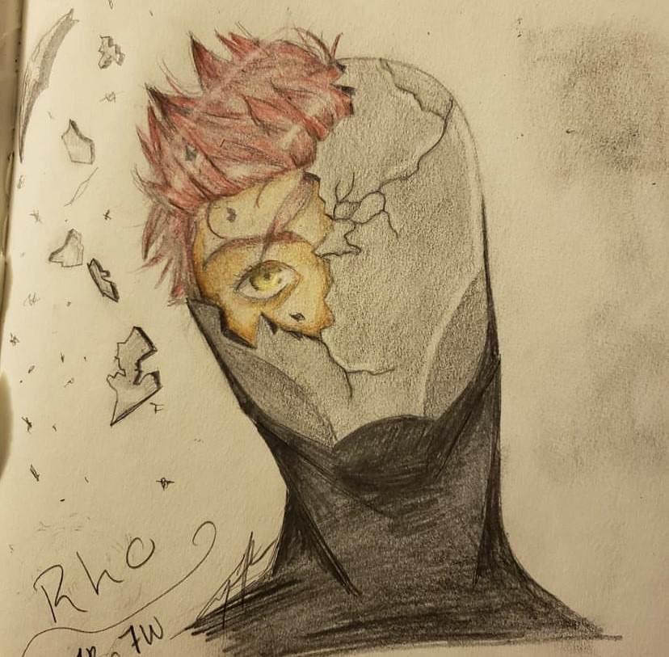

Drawing is and always has been a passion of mine. I started drawing at a young age, inheriting the gift from my mother. It isn't my primary hobby, however. So my improvement is a bit slow, but improvement nonetheless!
This was one of my first colored pencil drawings. I remember going through some old stuff and finding my PrismaColor colored pencils tucked away somewhere. At the time, I had gotten attached to a story I had been reading; one with a cynical vigilante who wore a silver helmet. I immediately got inspiration to draw her, upon finding my old tools. So I got right into it, watching youtube as I went to take advantage of the Pencil's infamous ability to mix and blend together. I don't use colored pencils often, but when I see this picture, I'm glad I know how to.
This one was a tragic story. I had gotten a tablet and was trying to learn how to color digitally. I started by drawing one of my own characters. I was watching a youtube video on shading and coloring specifically with the Medibang program in which i used. You can see, on the face, that i was getting somewhere at the very least. I was adding warm and cold colors, learning where they go and how they're used. This actually took me over 24 hours to do. Learning how to blend along the way. I was excited to complete this, and improve my ability to do semi-realistic art... and then it malfunctioned. I lost it. All of it. One technical difficulty wiped ths entire piece from my computer. This was the only evidence I had of its existence. A picture of the progress I proudly made, half of what I had actually accomplished before its self-destruction.